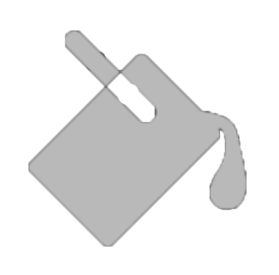
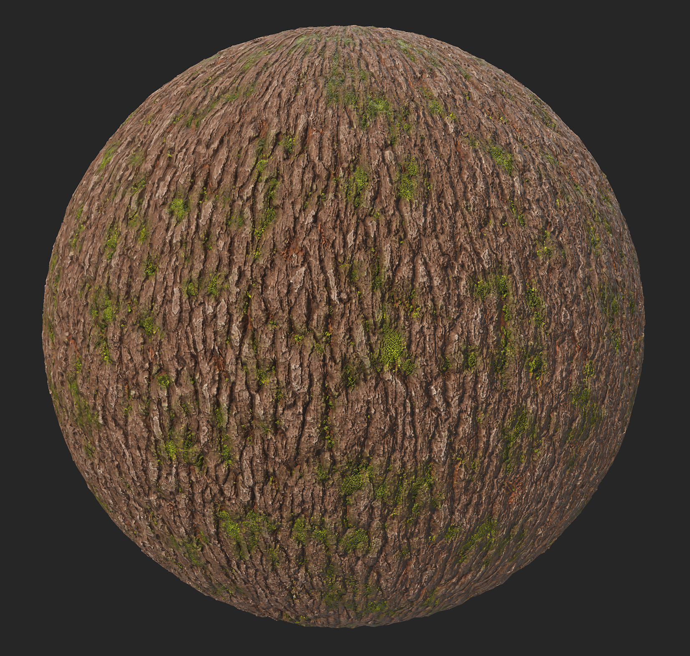
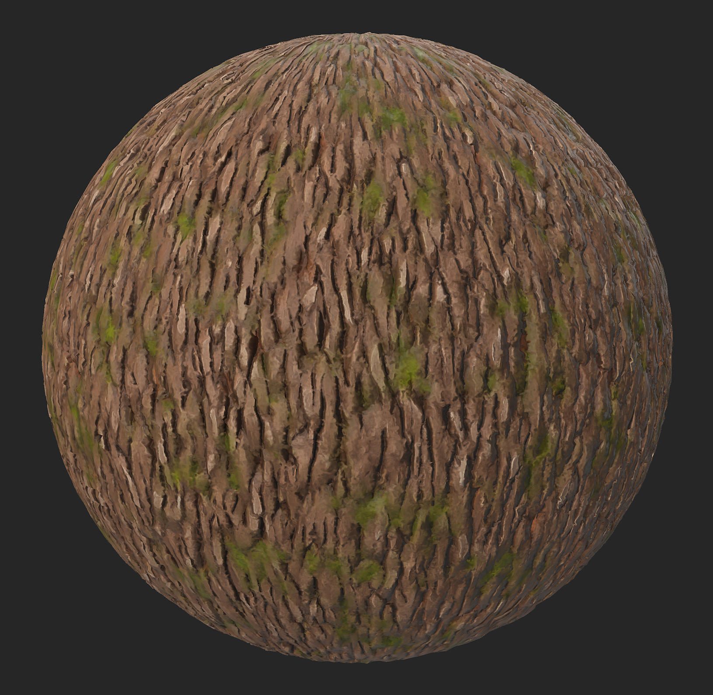

In: Wear Finish
Use the Stylization filter to modify your material look in order to simplify the details with different effects.
The images below show the bark material before and after having the Stylization filter applied.


Stylization
The default preset applies a soft stylization effect by blurring out small details, and increasing contrast
Contrasted Stylization
This preset applies a brushstrokes-like effect to the material
Painterly
This preset applies a blurry and soft brushstrokes-like effect to the material
Hand Painted
This preset applies more contrast than the previous ones, it mimics gouache or oil paint manual brushstrokes
Random seed
The random seed that all other random parameters in this filter are based on.
Global filter intensity: 0-1
Adjust how much the effects of this filter will be applied on your original material. Set to 1 to apply the full effect.
Contrast: 0-1
Modify the level of contrast that applies on your material
Color Stylization intensity: 0-1
Adjust how much the stylization effect of the filter will affect the color of your material
Roughness Stylization Intensity: 0-1
Adjust how much the stylization effect of the filter will affect the roughness of your material
Metallic Stylization Intensity: 0-1
Adjust how much the stylization effect of the filter will affect the metalness of your material
Height Stylization Intensity: 0-1
Adjust how much the stylization effect of the filter will affect the height of your material
Normal Stylization Intensity: 0-1
Adjust how much the stylization effect of the filter will affect the normal of your material
Colorize Intensity: 0-1
More vivid colors
Colorize Color: Color
Lets you pick the color that the “Colorize Intensity” parameters tends to.
Color Variation Intensity: 0-1
Adjust how much the intensity of the color is impacted by the color defined in “Color Variation”
Color Variation: Color
Chose the color that will drive the “Color Variation Intensity” slider
Color Variation Contrast: 0-1
Adjust the contrast in the color defined in “Color Variation”
Cavity Color Intensity: 0-1
Adjust the intensity of the color that appears in the sunken areas of the material, color which has been defined in “Cavity Color”
Cavity Color: Color
Defines the color which will be applied in the sunken areas of the material
Cavity Range: 0-1
Defines how wide the sunken areas will be in the material.
Cavity Blur: 0-1
Adjust the level of blur in the areas at the edge of the cavities of the material
Curvature intensity: 0-1
Modify how visible the highest point of the materials will be, colored with the color defined in the “Curvature Color” parameter
Curvature Colorize Intensity: 0-1
Adjust the opacity of the color defined in the “Curvature Color” parameter
Curvature Color: Color
Define the color that will be applied on the highest points of the material
Curvature Blur: 0-1
Adjust the level of blur around the areas colored by the “Curvature Color” parameter
Grunge Intensity: 0-1
Adds a grunge map on top of the material. The grunge map can be chosen below.
Grunge Color: color
Chose the color which will be used to apply the chosen grunge map
Grunge Roughness: 0-1
Adjust the level or roughness which will be applied to the added grunge map
Grunge Metallic: 0-1
Ajust the level of metalness which will be applied to the added grunge map
Grunge Roughness Variation: 0-1
Chose the level of variation in the roughness applied to the added grunge map
Grunge Roughness Variation Intensity: 0-1
Chose the level of variation of the intensity of the variation applied to the added grunge map
Grunge: Image
Choose an image or a Texture Generator available in Sampler’s asset library to be used as a grunge map
Sharpen Intensity: 0-1
Adjust the intensity of the global sharpening effect
Sharpen Radius: 0-1
Adjust the radius of the global sharpening effect
Recompute normal: Toggle
Allow Sampler to recompute the normal following the changes which have been applied to the material
Normal Intensity: 0-1
Adjust the intensity of the Normal map
Normal Softening: 0-1
Soften the normal for a smoother look to your material
Ambient Occlusion Intensity: 0-1
Adjust the level of the contrast on the AO map